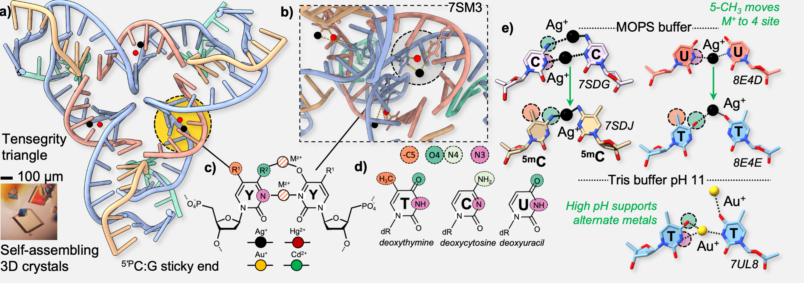
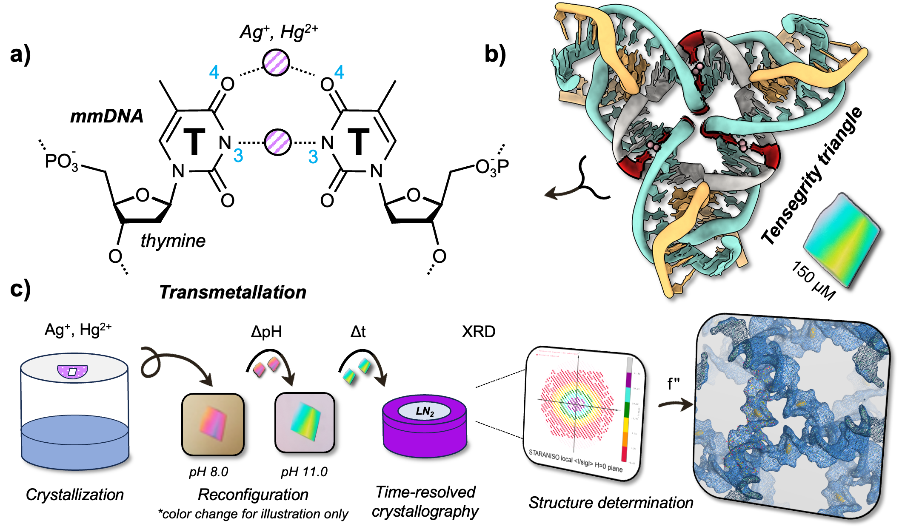

A Metal Design Language
Remodeling the double helix atom by atom
METALATED DNA
A Metal Design Language
We develop a bioinorganic programming language in which metal coordination is used to encode structure, function, and information into nucleic acids.

Workflow of developing metal-mediated DNA chemistry using self-assembling crystals. Lu et al, JACS (2023) 145 (32), 17945–17953.
Overview
The DNA molecule is the foundation for “semantomorphic” science, where the information contained within a nucleobase sequence (semanto-) is exploited for the topological programming of 2D and 3D architectures (-morphic). This is driven by Watson-Crick parity, the non-symmetric base complementarity between orthogonal nucleotide pairs (A:T, C:G). Metal Base Pairs: The intrinsic functionality of DNA enables self-assembly of branched structures (DNA origami, 3D crystals, etc.), but there is little in the way of electronic, magnetic, or photonic capacity from native DNA. It was found in 2006 that natural T:T mismatches could selectively bind Hg2+ ions in what is known as a metal-mediated DNA base pair (mmDNA), but to date no real applications of this technology have been engineered. The main roadblock to this technology lies in programming—a DNA alphabet in which each letter binds the same metals inhibits any ability to carry out self-assembly.
Thus a grand challenge in the field of DNA metalation is orthogonality: (1) there should exist at least two non-equivalent metal base pairs (C:G vs. A:T); (2) and those base pairs should be asymmetric (A:T/T:A). My research program will establish a means of topological programming of single metal ions in 3D architectures using the rapid crystallographic screening of orthogonal metal base pairs.
Research Workflow
Metal-mediated base pairing
We first use self-assembling crystals (i.e. the tensegrity triangle) as a high-throughput diffraciton platform to screen novel metalated DNA interactions. Using structural biology tools, we build a structural database that can be used for design, iteration, and experimentation.
Responsive Coordination
Once molecular structures are resolved, we work to identify the criteria for metalation: pH, buffer, co-metalation, etc. We then find ways to dynamically perturb these pairs, yielding techniological outputs.

Reconfigurable metalation using DNA crystallography. De et al, Small (2026) 21, 2411518.
Language development
Finally, we aim to develop a coding language that reads metals as an input to store information. We further aim to expand the library of metals inside the double helix to enable new functions.
Selected work from the lab:
Liu, B., Lu, B., De, A., Kim, K., Perren, L., Woloszyn, K., Petrova, G., Li, R., Yang, C.-F., Mao, C., Botana, A.S., Ohayon, Y.P., Canary, J.W., Sha, R., Anantram, M.P., Vecchioni, S.†, Hihath, J.† Electrical Control of a Metal-Mediated DNA Memory.
De, A., Lu, B., Ohayon, Y.P., Woloszyn, K., Livernois, W., Perren, L., Yang, C.-F., Mao, C., Botana, A.S., Hihath, J., Canary, J.W., Sha, R., Anantram, M.P.†, Vecchioni, S.† Transmetalation for DNA-Based Molecular Electronics.
Vecchioni, S.†, Lo, R., Huang, Q., Wang, K., Ohayon, Y.P., Sha, R., Rothschild, L.J., Wind, S.J. Silver(I)-Mediated 2D DNA Nanostructures.
Vecchioni, S., Ohayon, Y.P., Hernandez, C., Hoshika, S., Mao, C., Benner, S.A., Sha, R. Six-Letter DNA Nanotechnology: Incorporation of Z-P Base Pairs into Self-Assembling 3D Crystals.
Vecchioni, S.†, Lu, B., Livernois, W., Ohayon, Y.P., Yoder, J.B., Yang, C.-F., Woloszyn, K., Bernfeld, W., Anantram, M.P., Canary, J.W., Hendrickson, W.A., Rothschild, L.J., Mao, C., Wind, S.J., Seeman, N.C., Sha, R.† Metal-Mediated DNA Nanotechnology in 3D: Structural Library by Templated Diffraction.
Lu, B., Ohayon, Y.P., Woloszyn, K., Yang, C.-F., Yoder, J.B., Rothschild, L.J., Wind, S.J., Hendrickson, W.A., Mao, C., Seeman, N.C., Canary, J.W., Sha, R., Vecchioni, S.† Heterobimetallic Base Pair Programming in Designer 3D DNA Crystals.
Vecchioni, S., Sha, R., Seeman, N.C., Rothschild, L.J., Wind, S.J. DNA by Design: De novo Computational Framework for DNA Sequence Design and Nanotechnology.
Vecchioni, S., Capece, M.C., Toomey, E.*, Nguyen, L., Ray, A., Greenberg, A., Fujishima, K., Urbina, J., Paulino-Lima, I.G., Pinheiro, V., Shih, J., Wessel, G., Wind, S.J., Rothschild, L.J. Construction and Characterization of Metal Ion-Containing DNA Nanowires for Synthetic Biology and Nanotechnology.
Vecchioni, S., Capece, M.C., Toomey, E., Rothschild, L.J., Wind, S.J. Methods of Synthesis and Characterization of Conductive DNA Nanowires Based on Metal Ion-Mediated Base Pairing for Single-Molecule Electronics.
Vecchioni, S., Wind, S.J. Self-Assembled, Electronically-Functional Nucleic Acid Nanostructures and Networks Based on the Use of Orthogonal Base Pairs.
Toomey, E., Xu, J., Vecchioni, S., Rothschild, L.J., Wind, S.J., Fernandes, G.E. Comparison of Canonical versus Silver(I)-Mediated Base-Pairing on Single Molecule Conductance in Polycytosine dsDNA.